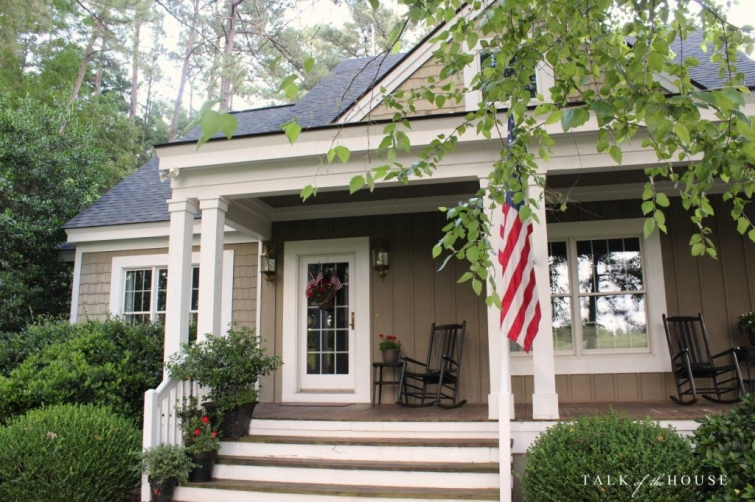
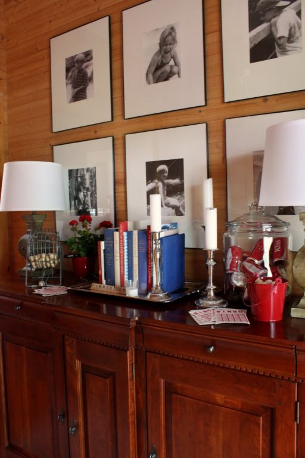

.png)
.PNG)
.PNG)
.PNG)
.PNG)
.PNG)
.JPG)
.JPG)
.PNG)
.PNG)


Happy last stop on this week’s wonderful Summer Tours! Haven’t you enjoyed them all?! It has been sooo much fun to see how everyone adds a touch of the season to their home- no matter what their style. If you are dropping in from Peaceful Home Decor, welcome! I just love Kelly’s big open kitchen living area.
When the oh-so-fabulous Marty invited me to be a part of this event, I knew it would be a great one, and I did not want to pass up the fun opportunity to party with 29 talented bloggers…but…I am sloooooow when it comes to decorating. I just retired from teaching a couple of weeks ago, and the last few weeks of school are always crazy. So I asked Marty if she could give me the latest date possible…and voila! Here we are! So come on in the front door, and you can grab a Coke from the jar there in the foyer if you would like. 🙂

I always want some kind of springboard for seasonal decorating here. Last year it was ice cream. This year, I am using games…the fun and games of summer. Because we should always make time for play, right? (Especially in summer. 🙂 )
 So that is why you see a bingo game on the buffet in the foyer.
So that is why you see a bingo game on the buffet in the foyer.
You will also notice a red, white, and blue color scheme going on. If you are a regular reader then you will know that there is always a lot of red in this house, so giving it a patriotic color scheme for summer is pretty easy. (And I will actually be ready early for the 4th of July..a miracle! 🙂 )
Now let’s go into the family room. The fun and games and the red, white, and blue continue in there as well.
You can help yourself to some candy in the jar on the coffee table. (Please eat it. Our daughter has all of us on a diet…not fun. 🙁 )
Let me just go ahead and tell you yes, I have a thing for jars (We discussed this last year here)…and black and white photography…and gingham…and chalkboards. This year I have a new addiction for summer (as if I needed another one!)…stripes. I think it started with those pillows there in the family room.
You might spot the striped napkins there under the ice scoop. Oh I almost forgot…those are red and blue bocce balls in the jar. Do you play?
And here’s another striped pillow.
(Please ignore the streaked mirror. Friday is cleaning day around here.)The mantel sports a croquet mallet and ball and more bocce balls for its games…and a little more red, white, and blue. 🙂
Now if you had really been here for a visit, it is entirely possible that you would have come in the side door instead of the front. If you had entered that way (like everyone here seems to do) you would have been greeted with this…
Spot any stripes there? 🙂
(I just couldn’t pass up that cute bag!)
And by that door, is our playroom – with its chalkboard.
There’s no red, white, and blue in there, but the stripes have taken over some of the pillows.
I wanted to show you one view with the lamps on in there. I know that rooms are supposed to photograph better with natural light, but the colors in this room look a little strange without the lamps on.
I’ve done this on the chalkboard in there before, but it just fit too well with the fun and games theme to not use it again.
And that winds up our tour here today, but… if you come back next week, I will show you my workroom that you can see through the doorway there…
and the kitchen,dining room, and porch that you can see down the hall below. 🙂
A big big thank you goes out to Marty for making all of this happen! And another big thank you goes to you for coming to visit. I love having visitors! If you missed any of the tours this week, you can find the links for them below.
Monday – June 8th
A Stroll Thru Life
Life On Virginia Street
Snazzy Little Things
21 Rosemary Lane
Thrifty and Chic
Claire Brody Designs
Tuesday – June 9th
Thrifty Decor Chick
Our Southern Home
Making Home Base
Hymns & Verses
Bliss @ Home
DIY Showoff
Wednesday – June 10th
City Farmhouse
Driven By Decor
No Minimalist Here
SG Style
Decor To Adore
Desire Empire
Thursday – June 11th
A Thoughtful Place
Monica Wants It
Rain On A Tin Roof
Charming In Charlotte
Remodelando la Casa
Dimples & Tangles
Friday – June 12th
Simple Details
Tidbits & Twine
Design Post Interiors
Designing On The Side
Peaceful Home Decor
Talk Of The House
Have a wonderful weekend!


.PNG)
What a fun and welcoming house!! Love your tour!
Kelly,
I am so excited to get a glimpse of my favorite room in your home, the game room! I love that room. It is so homey and inviting. It also has lots of my favorite color, green, in it! Thanks for sharing! Take care.
I LOVE how you decorate for all the seasons. I have the same bingo game and as soon as we get rid of a few big items that we no longer need (like a piano) I’ll be able to set up the game room. I love stripes too. It’s very hard to pass anything by with stripes on it! Congratulations on retiring!
——————————————————————–
Thank you Rhonda. I hope you make fast progress on getting rid of your big items. So glad to know that I am not alone in my love of stripes! And thank you for the congrats on my retirement. It still has not hit me that I am retired…I am just on summer break in my mind. 🙂
Kelly
Family cookouts and crochet? Ha! There is a picture for ya… 🙂 Give this woman some coffee! You knew croquet! Ugh! My Dad did win so many times and he loved when he could “send” someone. God bless him, as he is 90 now…but no more croquet… 🙁
——————————————————————
Yes, I did indeed know that you meant croquet and not crochet! (But it was rather cute!)
Kelly
Your home is always so comfortable and welcoming. Game theme is perfect. Growing up, so many of our family cookouts always brought badminton, volleyball and crochet. Good times…good memories. Where did you find the green labeled cokes? I need a bingo game too.
——————————————————————–
Weren’t those green labeled cokes just perfect for that room? Our local Walmart (and Target too I think) carries them. Your family cookouts sound like fun!
Kelly
One word kept coming to my mind as I scrolled thru this post….cheerful. Your home exudes cheerfulness. Your family is blessed to have you Kelly. Congrats on retirement!
——————————————————————–
Oh…that’s a good word Jennifer! I love a home that is cheerful…a happy place. 🙂 Thank you for the wonderful compliments and the congrats on my retirement. It is still hard to believe that I am retired!
Kelly
What a thrill this tour has been, and your home is perfect…I love the chalkboard! I have been looking for something to put on ours but haven’t gotten around to it yet! Great meeting you, enjoy your summer!
———————————————————————–
Nice to meet you too Jeanette! Your home was lovely, and all your diy projects were amazing. Hope you get your chalkboard finished. Thank you so much for stopping by!
Kelly
….and the happiest home was saved for last! I always come away from your blog with a smile upon my face. Love your jazzy summertime vignettes.
——————————————————————–
Gosh thanks Laura.:) I am so glad that you find the blog to be a happy place! Jazzy…that’s a cute word. I am going to have to find a place to use that!
Kelly
Loved your Summer Tour Part 1….Love seeing your home all dressed in the red, white and blue…so many creative and beautiful ideas for summer decor…and I am sure you will feel this summer will be the Endless Summer…!!
———————————————————————–
Thank you Shirley! The red, white, and blue has taken over most of the rooms here..so it is a good thing we like it. 🙂 I am looking forward to feeling like it is an Endless Summer…but so far it has just seemed like a normal summer break. I bet I will feel differently when I see school buses rolling down the road.
Kelly
You have the most comfortable, inviting house, and your family must love living there. You truly have the talent for making a home.
———————————————————————
What a lovely compliment Ellen. Thank you so very much!
Kelly
Kelly, they saved the BEST for last. I truly love your home and your design aesthetic. And you make it all look so effortless! Have a wonderful summer and enjoy your retirement.
——————————————————————–
Thank you Mary! I am so glad you enjoyed the tour of the house. I hope you have a wonderful summer too!
Kelly
Love the red, white and blue for summer! Leave it up to you to use books in those colors! I never would have thought of it. I just passed up an old red book at an estate sale today because it was too bright. :/ Now, I’ll be looking for some. 😉 I always love your green and black room too. I would like to use that color combination in my daughter’s old room. Her bridesmaids wore green and the men wore black tuxes so it would be perfect with her wedding pictures, etc. And I must say I love that striped bag!! I have a bit of a tote fetish. 😉
——————————————————————–
Gina, go back and get that red book! You will use it. I would bet green and black would be great for a bedroom. Your daughter’s wedding colors sound absolutely beautiful. I couldn’t pass up that tote either…the stripes were the perfect shade of blue. Hope you can find one like it! (This one was at Marshalls.)
Kelly
First off – congrats on retiring! I just finished my 4th in teaching, 8th overall in education. And second, I just love your house! The color, gingham, stripes and chalk boards are all great. Have a great summer!
——————————————————————-
Thank you so much Megan…both for the congratulations and for the compliments on the house. Good luck in your teaching career! I hope you find it as rewarding as I did, and I hope the paperwork doesn’t dampen your love for the job. Enjoy your summer!
Kelly
[…] Fri. – June 12th Simple Details | Tidbits & Twine | Design Post Interiors | Designing On The Side | Peaceful Home Decor | Talk Of The House […]
your home says summertime Americana to me! so fun 🙂
——————————————————————-
Thank you Kristin! I thought your home was swoon worthy!
Kelly
Kelly!! This is so charming, I just want to pop over for a visit and take it all in! I love the playful, casual style you’ve created and the bold red and of course, stripes! Enjoy your summer!
———————————————————————-
Thank you Pam! It is very casual, which works great for our family. I am glad you enjoyed your visit here…and yes there is a big dose of red and stripes in our home! Your home was absolutely beautiful. 🙂
Kelly
What better way to tour your home than doing it while sipping a coke, thanks! 🙂 I love red, white and blue any time, top it off with games and it’s just fun! Your home is beautiful, love the chalkboards and the stripes!
————————————————————————
Thank you so much Christina! I am happy that you liked all the patriotic colors and games. It is a fun house to live in. Your home was a beautiful one on the tour, and I enjoyed seeing the patriotic bedroom in your house today. Can’t get enough red!
Kelly
Hi Kelly,
What a fun array of red, white and blue. What I love most about your seasonal decor is that it always looks natural, never forced. Of course we would play more in the summer so the bingo game and such fits perfectly. We have a bocce set but our balls are hunter green and crimson, more Christmas than summer colors! 🙂
I’ve enjoyed the tour each day of fellow bloggers homes.
Yours is one of my favorites so far, no surprise there.
xo,
Karen
————————————————————————–
So you can decorate with your Bocce balls at Christmas! 🙂 I am glad you enjoyed the week of tours Karen. I can’t even begin to imagine how much work that was for Marty. Goodness!
Thank you for the compliments on the decorating here.
Kelly
It’s beautiful, Kelly. You have a perfect put your feet up with a good book and make yourself at home house. The fun and games theme is so cute. I like that your cleaning day is Friday– like in the Little House books. 🙂
———————————————————————
What a lovely compliment on the house Vicki! I had my feet up for 6 hours today to see if it would help with ankle problems. (It did!) Yes, I am cleaning on Fridays (and frequently on Saturday too.) How funny they did that in the Little House books!
Kelly
Kelly – we are two peas in a pod – I am the slowest decorator ever too 🙂 I always love seeing your home and just adore your style. The game theme is awesome – my kids would love that! Hope you have a wonderful summer!
—————————————————————–
I can’t believe you are slow Kris! You accomplish so much, you can’t possibly be slow! Thank you for your sweet words about our home. I try to make it appealing for all ages since we do have all ages that visit here (or maybe I am just in MY second childhood! LOL)
You have a wonderful summer too!
Kelly
I’ve been terribly busy here and have had zero time to even leave a comment on your retirement–:-(( I’ve enjoyed all the tour and I must add your home shines…it has color and personality…nice job! Maybe a home tour for the autumn or for the holidays! I imagine it took extra time and so I thank all for their effort.
———————————————————————-
Well then thank you for taking the time to stop in and leave a comment. I am glad you enjoyed all the tours, and I thank you for the compliment on our home. Yes, it has taken some extra time to do, but the big person who had the most to do was Marty. I don’t know how she managed to pull 30 bloggers together!
Kelly
So fun, I did red white and blue this year also. Great ideas!
——————————————————————–
It is such a good combination for summer, isn’t it? Thank you for stopping by Linda.
Kelly
I love your home, it is always such a treat to take a tour and your amaze me with how you can take the most simple things and turn them into something so interesting. I would have never thought to use games, but how fun and fabulous is that. Great tour, and oh by the way,I love the stripes.
————————————————————————-
Thanks Marty! I am happy that you enjoy all our room decor here. I amaze you? Girl you amaze me with the ability to pull 30 bloggers together and keep it all flowing so well, AND do a summer tour on your own home as well. You are the one who did the great job! (But I am glad you liked the stripes. LOL)
Kelly
Of all the houses you show us, I like yours the best Kelly. Love all the summer touches around your house and the color red is always a favorite for me. I still envy your chalk skills…mine never seems to turn out like I want it to turn out!!
———————————————————————
Gosh thanks Arlene! You are so nice to say that. I think everyone has a specific decorating style, and we all just find the style we best relate to. Keep practicing on those chalk skills. Get a chalkpen and it will be easier. 🙂 (More like “normal” writing.)
Kelly
Gorgeous… Fun… Great Summertime ideas!!! funny … funny about the mirror!!!! Guess you’re just keeping it real .. right?? lololol
———————————————————————-
I am glad you liked the ideas Terri! And yes, I am keeping it real with the streaky mirror 🙂
Kelly
I LOVE your door decoration and of course your home looks lovely (as usual). I also love how your incorporate red, white and blue by not doing all the typical items one would expect. Just gorgeous.
———————————————————————
You are too kind Cheri! Thank you for loving it all. You are right. Bocce balls in red and blue are certainly NOT the norm. LOL
Kelly
Love the games theme. I’m going to copy that idea for my 4th of July decorating. Your home looks lovely–inviting and warm–as always!
———————————————————————–
Well I am so glad you found an idea to use for your own decorating Barbara! Thank you for your compliments on our house. We appreciate them!
Kelly
Red, white & blue! Salute! Of course, I skipped right down to your posting today ( will go back later to the others!) I have so looked forward to today and was not disappointed at all— and there is a Part 2! What a treat!! Loved the summer game theme! And only YOU would think to place a mallet on the mantle!! Genius –and so out of the box thinking!! As always I tried to check out your book titles!:) Everything in your home speaks of family and friends and anyone would feel at ease there. Thank you for “inviting” us to take a peek!! Patriotic — just in time for Flag Day on Sunday!!
———————————————————————-
Louvina, your comments are always just so sweet. Thank you so much. You are too kind dear! I am glad you liked all the decorating and the theme for summer. It just seemed to fit with the season and our family. Thank you for coming to visit!
Kelly
While I enjoy all your posts the pictures of your own home are my favourite. Love your use of old games for your summer decor! LOVE Trivial Pursuit! That was a longtime family fave! Wishing you a happy summer from Canada.
——————————————————————–
Goodness, thank you for your compliments Kelly. If you love Trivial Pursuit, then you must be good at it! I am terrible, and rarely know an answer, but it is still fun to me. 🙂 Happy summer to you up there in Canada!
Kelly
Kelly, your home is always so inspirational. A sports theme is perfect for summer. I too purchased a striped pillow for a chair in our living room. Plus three out of my four new maxi dresses are striped. I may be on the stripes bandwagon too.
——————————————————————–
Yes, I do believe you are on the stripes bandwagon too Sandy! I bought a red and cream striped dress at Talbots the other day. (Maybe we need a support group! LOL) Thank you for the compliments on our house. The sports/games theme is working well for us.
Kelly
What a beautifully decorated and comfy home. Enjoy your weekend.
———————————————————————-
Goodness…thank you Katie! I am glad you liked the rooms in our house. I hope your weekend was a good one.
Kelly